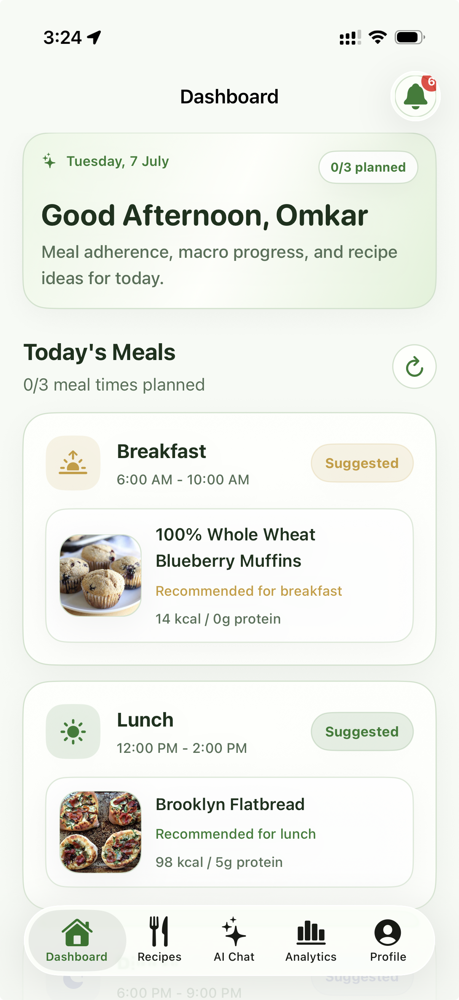
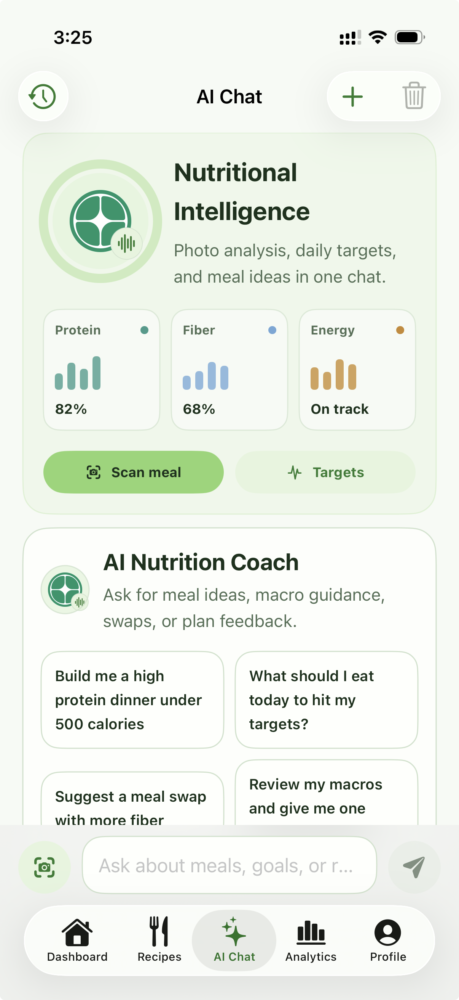
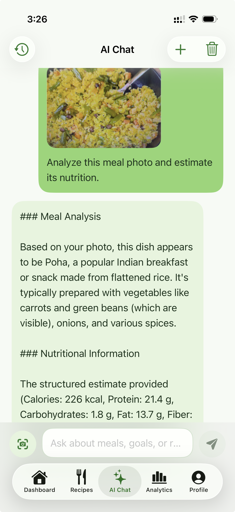
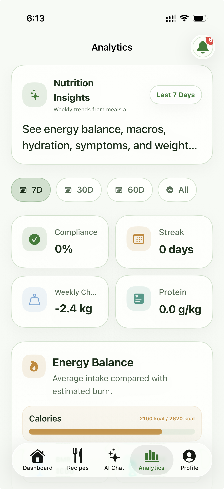
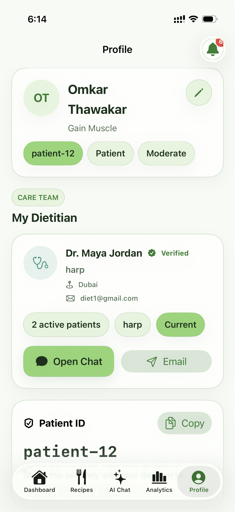
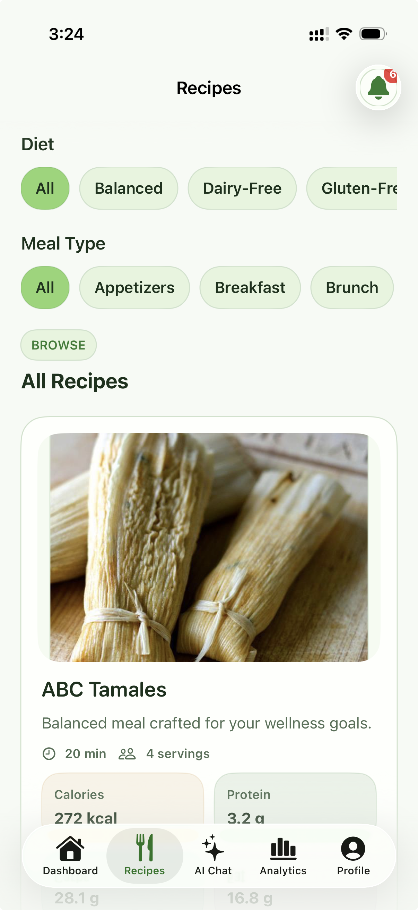

Nutrigenics.Care
Intelligent clinical nutrition and dietary platform designed to customize wellness insights. Powered by our proprietary Nutrition-GPT model, Nutrigenics translates biometric data and user food logs into real-time diet optimization advice and health analytics.
Nutrition-GPT
Clinical
Guidelines
Diet
Coaching
Privacy-First
- Integrates structured medical literature for sound diet suggestions.
- Tracks macro-nutrients and food composition through conversational chat.
- Builds personalized nutritional plans mapped to individual health profiles.
- Maintains offline sandboxing for high privacy and local record preservation.
Grants & Funding
Nutrigenics.Care is supported by over $100K+ in grant funding and is backed by the Microsoft Founders Hub with $150K in technical infrastructure and cloud credits.





